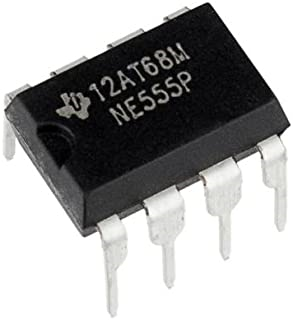

About this book

This eBook guides you to building projects, conducting experiments, and to understand the real-world applications of the most popular IC 555 Timer. Combo of projects and experiments consist of 24 Projects and 27 Experiments, in total 51 are discussed in this book.
Today electronic projects and experiments for engineers, technicians, hobbyists, and students are an essential part of their profession and academics. These educational electronic projects and experiments boost their skills and analytic power rapidly to a great extent. IC 555 is extremely popular and has been using in thousands of applications and it.
The eBook includes Theory, circuit diagrams, circuit description, equations, graphs, calculations, actual photos of electronic components, their pin configurations and polarity, colour codes of components and component's value conversion tables.
To support your project building work and to boost your knowledge, bonus materials such as understanding circuit diagrams, the anatomy of the breadboard, how a breadboard and circuit work, and practice circuit on a breadboard with actual photos and detailed explanation also included.
The 555 Timer IC is one of the oldest and most rugged chips on the market. The 555 Timer is an integrated circuit used in a variety of timing applications, sensor interface, oscillator, and many more applications.